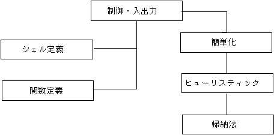

（２４）Ｂｏｙｅｒ−Ｍｏｏｒｅ型定理証明システム：ＢＭＴＰ
マ シ ン：UNIXマシン
環 境：UNIX
言 語：SICSTUS Prolog
ソース量：400 KB
文 書：マニュアル (英語)
概要
Lispプログラムの性質を証明するシステムである。
構成

機能
Boyer-Moore型の定理証明システムは、最も強力な定理証明システムの一つと
して知られている。その特徴は、
- Lisp関数で表現される計算可能な領域を対象としている。
- 基本関数 (AND, OR, NOT, IMPLIES, EQUAL) やシェルと称されるデータ型
構成子（ADD1,CONSなど）に関する公理、および関数定義式を所与の書き換え
規則とし、与えられた命題に対して真偽値に到達するまで繰り返し項書き換え
を試みる。
- 経験に基づいて調整されたヒューリスティックな書き換え規則が効果的に
適用される。
- 機能的に定義されるデータ型 (自然数、リスト、ストリングなど)、なら
びに機能的に定義される関数から自然に導かれる帰納法図式を用いて、帰納的
推論が行われる。
本システムには、「A Computational Logic,Academic Press, 1979」に基づき、
Prologによりコンパクトに実装したものである。
ＦＴＰ
- Ｂｏｙｅｒ−Ｍｏｏｒｅ型定理証明システム：ＢＭＴＰ [99K]

www-admin@icot.or.jp